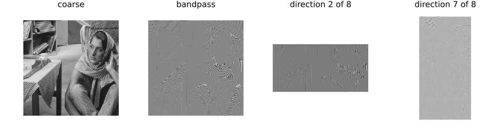

Use the pyramid and filter-bank stages alone
Each contourlet transform combines a pyramid, which splits an image into a coarse lowpass image and a bandpass image, with a directional filter bank, which splits a bandpass image into 2^l orientations. Both stages are public functions that you can call on their own. They are not exported; import them by name.
| Stage | Analysis | Synthesis |
|---|---|---|
| Laplacian pyramid (one level, downsampled by 2) | lp_decompose | lp_reconstruct |
| Nonsubsampled pyramid (one level, full size) | nsp_decompose | nsp_reconstruct |
| Directional filter bank (downsampled) | dfb_decompose | dfb_reconstruct |
| Nonsubsampled directional filter bank | nsdfb_decompose | nsdfb_reconstruct |
| Two-channel quincunx filter bank | qfb_decompose | qfb_reconstruct |
The pyramids take a filter pair such as CDF97, the filter banks a quincunx pair such as Q2345. Most have a ! form that writes into arrays you allocate.
One pyramid level and a directional filter bank
using Contourlets, TestImages, ImageCore, Plots
using Contourlets: lp_decompose, lp_reconstruct, dfb_decompose, dfb_reconstruct
Plots.default(show = false)
img = Float64.(Gray.(testimage("barbara")))[1:512, 100:611]
coarse, bandpass = lp_decompose(img, CDF97)
println("coarse ", size(coarse), ", bandpass ", size(bandpass))
println("pyramid round trip: ", maximum(abs, lp_reconstruct(coarse, bandpass, CDF97) .- img))
subbands = dfb_decompose(bandpass, Q2345, 3) # 2^3 directions
println(length(subbands), " subbands of sizes ", unique(size.(subbands)))
println("filter bank round trip: ",
maximum(abs, dfb_reconstruct(subbands, Q2345) .- bandpass))coarse (256, 256), bandpass (512, 512)
pyramid round trip: 2.7755575615628914e-17
8 subbands of sizes [(128, 256), (256, 128)]
filter bank round trip: 2.7755575615628914e-16gray(a, title) = heatmap(a; title, titlefontsize = 11, color = :grays,
aspect_ratio = :equal, axis = false, grid = false, colorbar = false, yflip = true)
plot(gray(coarse, "coarse"), gray(bandpass, "bandpass"),
gray(subbands[2], "direction 2 of 8"), gray(subbands[7], "direction 7 of 8");
layout = (1, 4), size = (1000, 280))
dfb_subband_sizes gives the subband sizes without computing them. The nonsubsampled versions keep every output at the input's size; nsp_decompose takes the pyramid level (1 for the finest) because its filters depend on it.